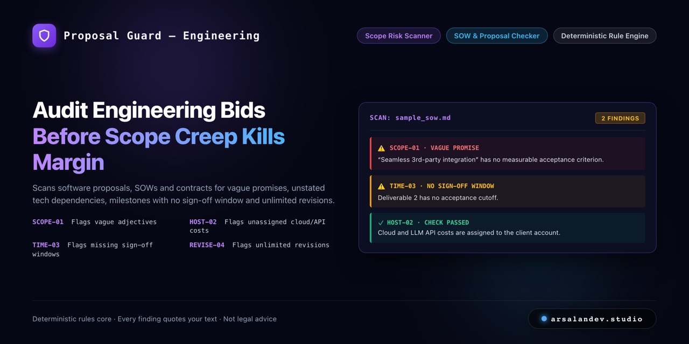

Proposal Guard

Paste a draft proposal or statement of work. Fixed rules list sentences that invite scope creep. Early demo of an open-source project.
What leaves your device: nothing. The check runs in this page. The page makes no network requests (its content-security policy forbids them), stores nothing, and has no analytics. Close the tab and the text is gone.
Not legal advice. Proposal Guard is a text checker, not a lawyer or a law firm. It matches fixed rules against the wording of your draft and suggests blanks to fill in. It does not assess legality, enforceability, jurisdiction, liability, intellectual property, tax or payment terms. A document with no findings is not thereby a good or safe document. Findings and suggestions are prompts for you to think about, not advice to sign or not to sign. Have a qualified professional review any contract that matters.
How well does it work? Not well yet. In the latest test on 30 invented documents it had not been tuned on, 18 of the 38 findings it reported were correct, and it found 18 of the 37 findings that reviewers expected. Both the documents and the reviewers' labels were written by Claude, and the rules scored much higher on documents they were tuned on, so treat it as a first-pass checklist, not a verdict. Read the full evaluation.
It flags some listed patterns and misses much else. English only. No model is used.
Your text, with flagged sentences marked
Findings
Rule status
Rules
Open source (MIT): github.com/arsalan-arshad/proposal-guard. A project by arsalandev.studio: case study.